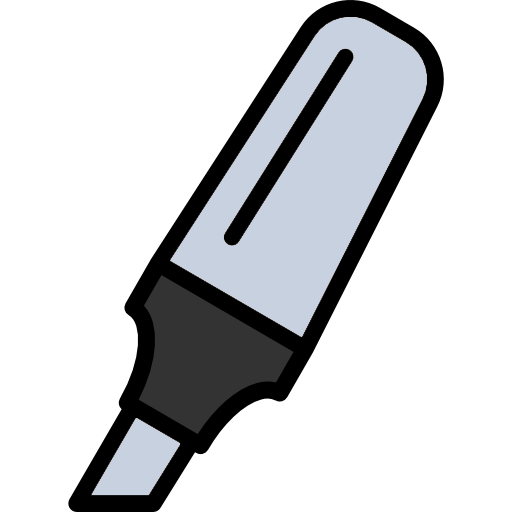

Lord, grant me the spirit of wisdom and revelation in the knowledge of who You are. Amen.
Ground the passage in its historical context (using a study Bible or your previous notes):
author · time frame · audience · purpose
Put all outside resources away and read through the passage slowly. Pay attention to the writing style:
- Story: Watch characters, setting, conflict, & resolution.
- Poetry: Notice imagery, metaphors, & emotional turns.
- Discourse / Letters: Follow arguments, logic, & "therefore" conclusions.
- Historical context helps you place the passage in the Big Story and see how different the original culture and audience were from our own. But context-gathering isn't the whole study — once you have the basics, put commentaries and other outside resources away (including AI) so there's room for the Holy Spirit to teach you directly from the text.
-
Trusted resources for contextBible Hub – Introductionsbiblehub.com/genesisBlue Letter Bible – Introductionsblueletterbible.org
-
The Bible is a mix of three literary styles, each read a bit differently — here's how the whole Bible breaks down:
For a closer look at these three styles, watch BibleProject's Literary Styles in the Bible.43% Narrative
Characters, setting, conflict & resolution. E.g. the Red Sea crossing in Exodus 14.
33% PoetryImagery, parallelism & emotional turns. E.g. that same story retold as a song in Exodus 15.
24% Discourse / LettersArguments, logic & "therefore" conclusions. E.g. Paul's letters, like Ephesians.

Reread the passage — which words or phrases are being emphasized? (Look for repetition, lists, comparisons, etc.)
Which words need more clarity? Look them up — what do you learn?
How would you summarize the passage in 1–2 sentences?
- Marking up the text as you read is what makes repetition, lists, and comparisons actually jump out. Grab a pen or highlighters, or print the passage if you'd rather not write in your Bible.
-
Trusted resources for word studyKeep Dictionary.com handy for two kinds of words: ones that are genuinely unfamiliar, and "church" words you've heard so often you've stopped asking what they actually mean (justified, sanctified, redeemed).Dictionary.comdictionary.comBlue Letter Bible – Lexiconblueletterbible.org
-
What counts as emphasis changes with the genre — here's where to focus:
Narrative
- A word, phrase, or action that repeats as the scene unfolds
- What's said about each character
- Whether the phrase that opens the scene also closes it (inclusio)
Poetry- Two lines saying the same thing in different words, or opposite things (parallelism)
- An image or phrase that keeps resurfacing
- Whether the first and last lines mirror each other (chiasm)
Discourse / Letters- Connector words: therefore, but, for, so that
- A key term repeated through the argument
- Lists — commands, virtues, qualifications
Lord, correct any lies I believe. Let this knowledge increase my love for You and others, not my pride. Amen.
Reread the passage—what questions come to mind? Can other translations clarify them?
Read the passages right before and after this section—how do they connect to this passage?
Review 1–2 cross references—how does this passage fit into the larger story of Scripture?
- Questions aren't a sign you're missing something — they're often where real understanding starts. Jesus himself asked far more questions than he answered; wrestling with a text is part of taking it seriously, not a lack of faith.
- Before reaching for a commentary or AI, work the question with tools that keep you in the text itself — another translation, the surrounding passages, and cross-references. Save commentaries and AI for after you've done that digging.
-
Translations. Scripture is often the best commentary on itself — a second translation can clarify a confusing word or phrase before you look anywhere else.
RV
ASVKJVNKJVNASBESVRSVNRSVCSBNABNETRNJBNIVREBCEBNLTMSGWhere common translations fall on the word-for-word ↔ thought-for-thought spectrum - Surrounding passage. Read the chapter or letter around your passage in one sitting. Notice what argument or story it's part of, and how your passage fits inside that bigger flow.
-
Cross-references. Other passages that use the same words, images, or ideas can shed light on your question and show how this passage connects to the rest of Scripture.
Trusted resources for cross-referencesBible Hub – Cross Referencesbiblehub.com
How would the original audience have understood this passage?
What does this passage reveal about who God is—His character, attributes, or eternal purpose?
-
The interpretive bridge. In Grasping God's Word, Duvall and Hays picture interpretation as a river with two banks, and God's unchanging character as the bridge between them:
Today's two questions are that bridge in miniature. Once you can name what still holds true, Day 5 will build on it.Their World
How would the original audience have understood this passage?
God's unchanging characterOur WorldWhat's still true for us today?
- Community. Everyone reads with blind spots — assumptions shaped by culture, upbringing, and life experience that are hard to see in yourself. Bringing what you've found to a group, even just a couple of trusted people, is often the fastest way to catch a misreading before it hardens into a conclusion.
- Now you can consult outside resources. You put commentaries and AI aside on Day 1 so the text could speak for itself first. By now you've wrestled with it personally and tested it in community — that's the right time to bring in a trusted commentary, study Bible note, or sermon to confirm or sharpen what you've found.
What cultural or personal lies are challenged by the truth of who God is?
How will the truth from this passage shape your prayers, thoughts, words, and actions today?
- Consider how living out this truth would change things in your home, your church and your community and beyond.
-
Write your application in light of what you have learned about God. When we learn His character and purpose, it changes our character and purpose.
God is Therefore, I
- Pray for God to reveal to you how you should be living this out and when necessary ask for accountability from other believers.